Support assistant over your docs
Answers from your own documents with citations, and hands over to a human when it isn't sure.
Outcome: customers get an answer with its source; unclear questions go to a person, not a guess.
Available now · Yerevan (GMT+4)
AI / ML Engineer · Yerevan
I build AI assistants that answer from your own documents with sources, automations that remove repetitive work, and ML models trained on your data.
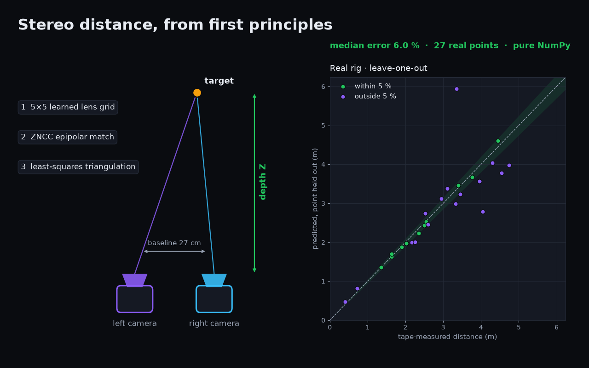
What I can build for you
A working version on your own data first, then you decide.
Answers from your own documents with citations, and hands over to a human when it isn't sure.
Outcome: customers get an answer with its source; unclear questions go to a person, not a guess.
n8n or Make workflows that capture a lead, ask the right questions, and book the call.
Outcome: every lead gets the right questions and a booked slot, with no manual chasing.
Bots for orders, bookings, FAQs and alerts, in English, Russian or Armenian.
Outcome: orders, bookings and FAQs handled in the app customers already use, in their language.
Scheduled collection from public sources into Sheets or a dashboard, with retries and alerts.
Outcome: fresh data lands on schedule; a failure sends an alert instead of going silent.
Churn, risk and forecasting models, evaluated honestly on data the model has not seen.
Outcome: a prediction you can judge, scored on unseen data, with its limits written down.
Product visuals, short clips and creative assets produced with AI tools.
View counts update live on Instagram → @yerevanyan.mult
Outcome: a set of on-brand visuals and clips ready to post, made without a studio.
Selected work
Labels show what you can actually open: Live means a running service, Code means a public repository.
Python · NumPy · ZNCC matching
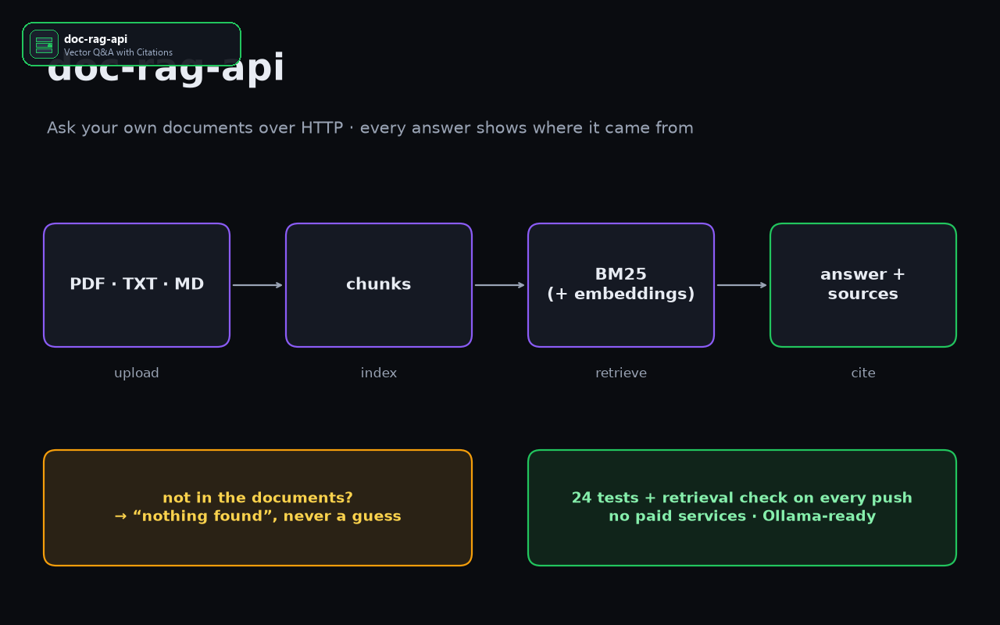
Python · FastAPI · RAG · Ollama
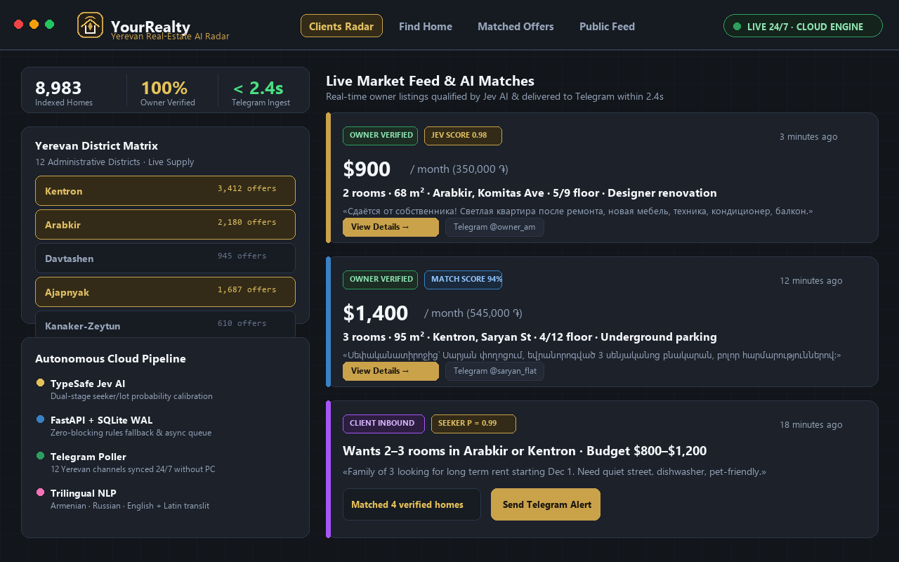
It never sleeps, so no buyer waits for an agent to catch up.
Python 3.12 · FastAPI + HTMX · TypeSafe Jev AI · Telegram
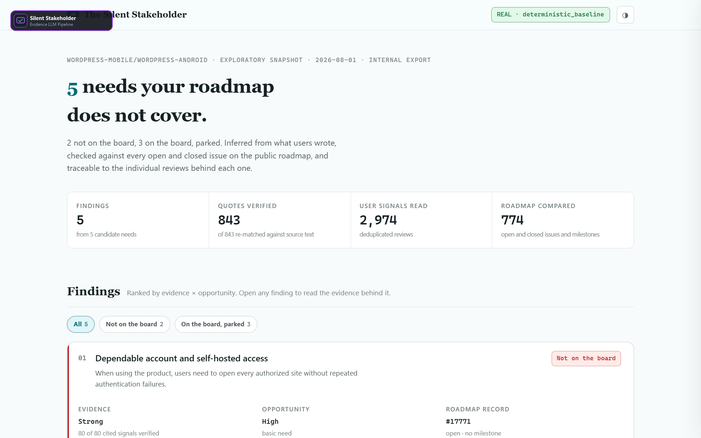
Python · LLM pipeline · Streamlit
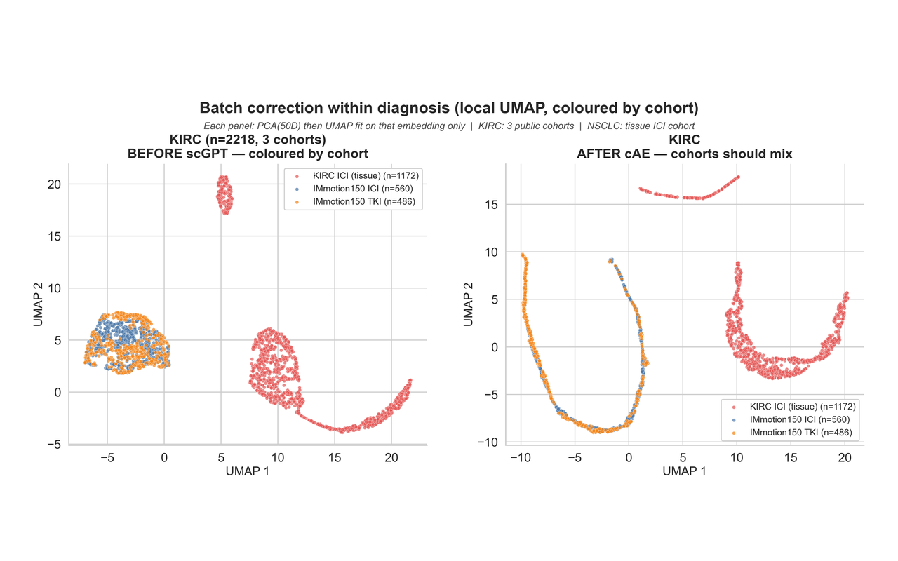
Python · scGPT embeddings · autoencoder
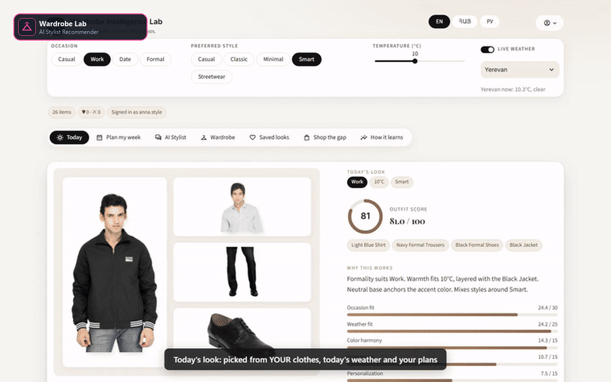
Python · local LLM · recommender
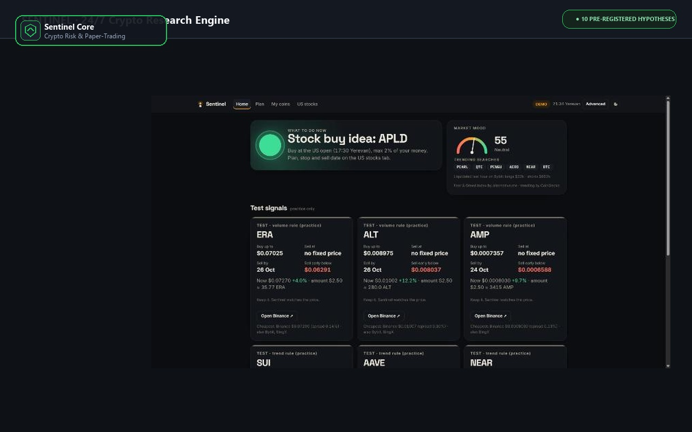
Python · TimescaleDB · risk engine · alerting
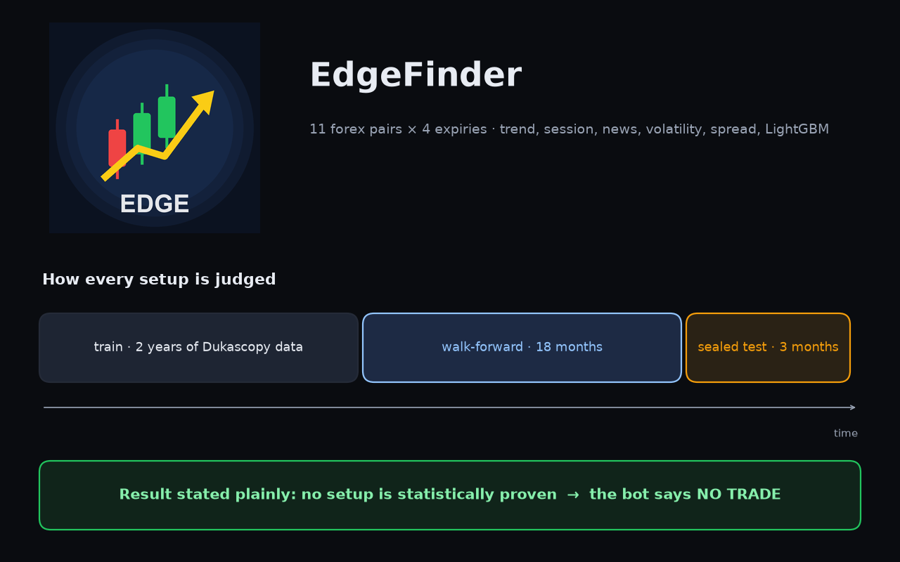
Python · LightGBM · Telegram · kill switches
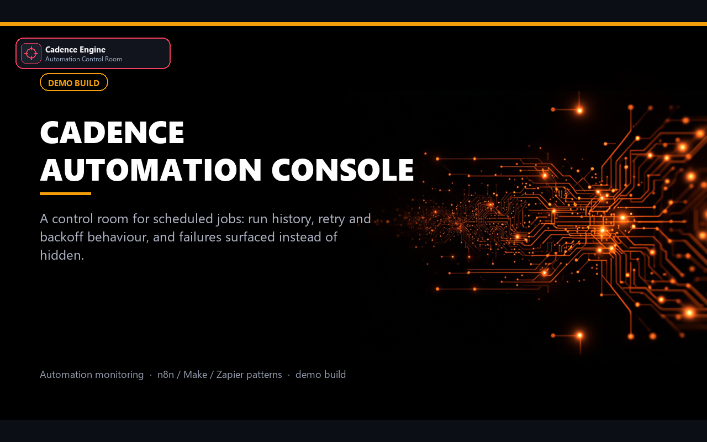
Scraping · cron scheduling · alerts
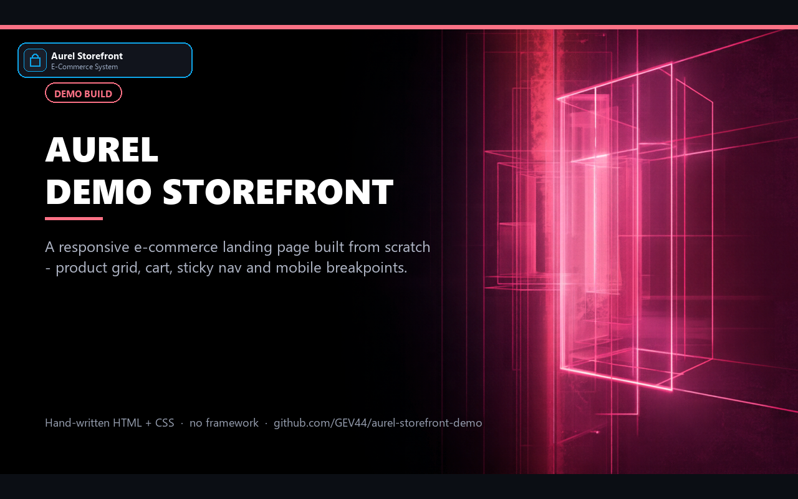
HTML · CSS · responsive
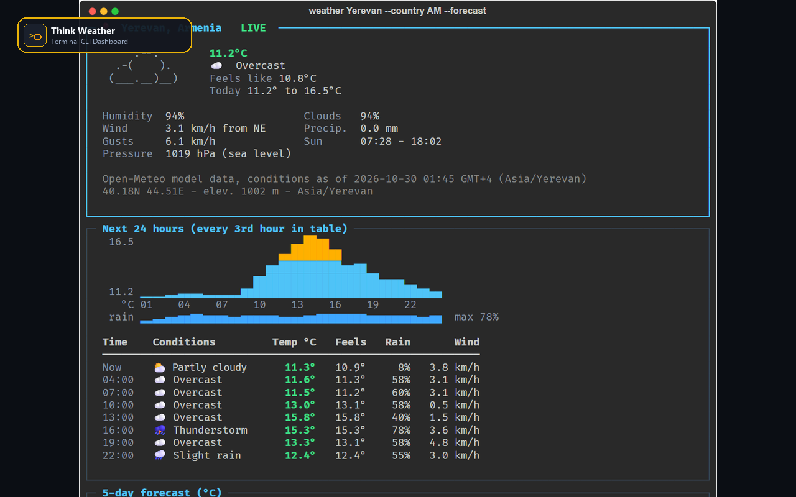
Python · Rich CLI
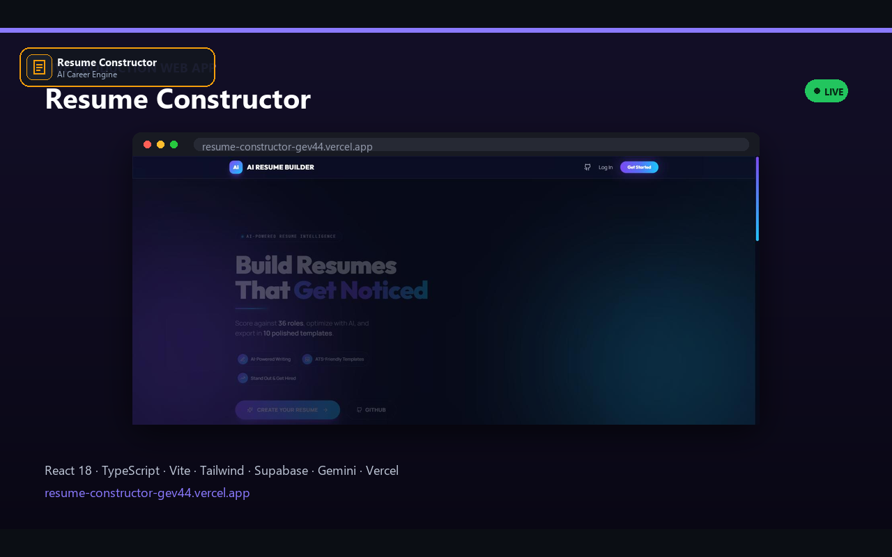
React + TypeScript · Supabase · Gemini
Example sites for local businesses
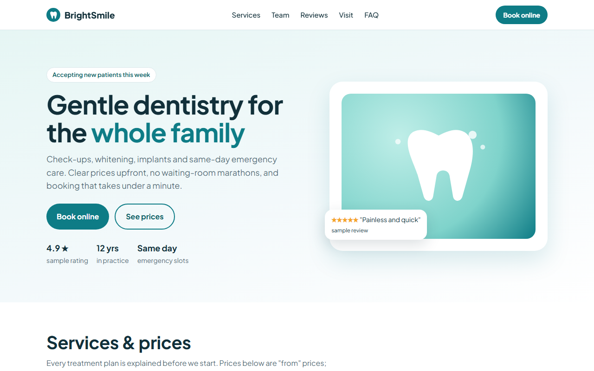
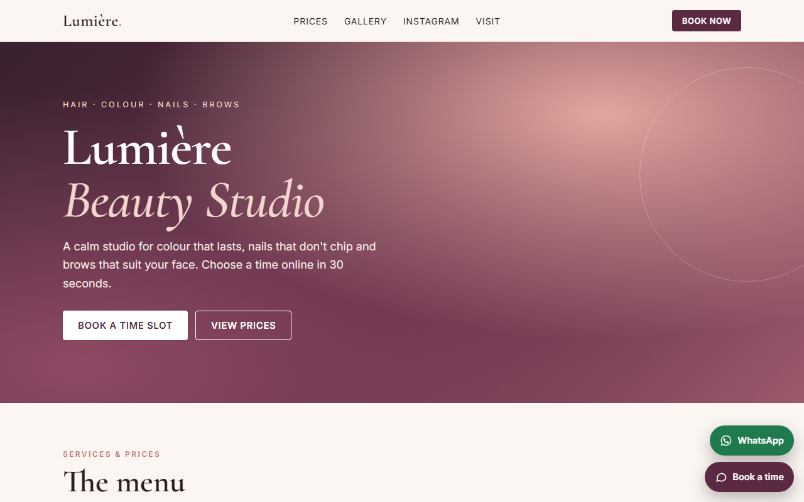
How a project runs with me
5 minutes in chat: what you want automated, collected or answered.
A working version within 24 hours, on your own real data, before you pay anything.
You agree, I build it with tests, and it goes live in 1–3 days.
Code, setup guide and handoff document, plus a full month of free changes after launch.
How I work
You see the thing running on your own material before you commit to anything.
Assistants point to the passage behind every answer and say "I don't know" when the documents don't cover it.
You get tests, setup notes and a handoff document, so the system keeps working without me.
FAQ
Yes. I work from Yerevan (GMT+4) and everything runs over chat and calls, so location is not a limit.
English, Russian or Armenian. Assistants and bots can answer your customers in all three.
Assistants answer only from the content you approve. Nothing is invented: if your documents don't cover a question, the assistant says so and hands the conversation to a person.
You get the code, tests, a setup guide and a handoff document, plus a month of free changes after go-live.